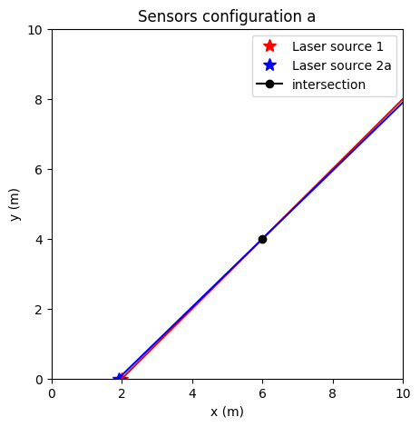
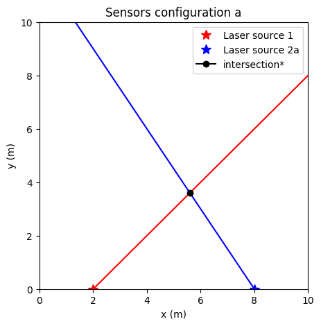

---
title: New Post
date: 2023-07-12
description: A nice new post
categories: [nonsense, code]
---- This is a group assignment. Only 1 submission per group is needed.
- Rename the notebook so that XXX is replaced with your group’s number.
- Read through all the exercises first to get an idea of what each is asking for.
- Write your solutions in each cell that says
# your code here. - Before submitting, restart the kernel and click
Run all cells. Make sure there are no error messages. - To pass the assignment, your submission should have correct working solutions to all tasks and answers to any reflection questions. If you run into trouble, ask for help.
- Submit your notebook as a .ipynb file on the Canvas assignment page.
- Read the feedback you receive on the assignment on Canvas by the teaching team (available usually one week after the submission deadline).
- If your assignment is graded as incomplete, then you should address any corrections required as explained in the feedback, and re-submit by attaching the new notebook as a reply to the feedback.
A note on group work:
We recommend that each group member attempts the solution to each exercise on their own at first, and then discusses it with the other member. Experience shows that in this way groups get more ideas for solutions and eventually write better code. Choose to work in a way that ensures each group member is able to solve each task on their own in the end.
Assignment learning objectives
- Exercise 0: demonstrate correct use of matrix operations using numpy.
- Exercise 1: interpret the condition number for solving a system of linear equations.
- Exercise 2: apply different numerical methods and check the reliability of the solution.
- Exercise 3: apply linear algebra concepts to scientific problems.
Exercise 0: Matrix manipulations with numpy
Consider the following matrices:
$ A = \[\begin{pmatrix} 1 & 2 & 3\\ 4 & 5 & 6\\ 7 & 8 & 9 \end{pmatrix}\] $ , $ B = \[\begin{pmatrix} 11 & 12 & 13\\ 14 & 15 & 16\\ 17 & 18 & 19 \end{pmatrix}\] $ and $ C = \[\begin{pmatrix} 1 & 2\\ 3 & 4\\ 5 & 6 \end{pmatrix}\]$
Task 1
Use numpy and the above matrices to: - perform one matrix addition - perform one element-wise matrix multiplication - perform one matrix multiplication - concatenate the matrices \(A\) and \(C\) along their columns and print the result. The resulting matrix’s dimension should be \(3\times5\). - for each operation, print the resulting matrix dimension using the .shape method.
Task 2
- Explain the requirements on the matrix dimensions for the three types of operations performed in task 1.
# YOUR CODE HERE
import numpy as np
A = np.arange(1,10)
A.resize((3,3))
B = np.arange(11,20)
B.resize((3,3))
C = np.arange(1,7)
C.resize((3,2))
print('A = ', A,'\n','B = ', B)
print('C =', C)
print('--- operations ---')
print('+', A+B, 'shape=',(A+B).shape)
print('dot', np.dot(A,B), 'shape=', (np.dot(A,B)).shape)
print('matmul', A@B, 'shape=', (A@B).shape)
print('concat', np.concatenate((A,C), axis=1), 'shape=', np.concatenate((A,C), axis=1).shape)A = [[1 2 3]
[4 5 6]
[7 8 9]]
B = [[11 12 13]
[14 15 16]
[17 18 19]]
C = [[1 2]
[3 4]
[5 6]]
--- operations ---
+ [[12 14 16]
[18 20 22]
[24 26 28]] shape= (3, 3)
dot [[ 90 96 102]
[216 231 246]
[342 366 390]] shape= (3, 3)
matmul [[ 90 96 102]
[216 231 246]
[342 366 390]] shape= (3, 3)
concat [[1 2 3 1 2]
[4 5 6 3 4]
[7 8 9 5 6]] shape= (3, 5)Exercise 1: Condition number
In this exercise you will explore the sensitivity of a solution of a linear system of equations to numerical errors.
Consider the matrices:
$ A = \[\begin{pmatrix} 0.8647 & 0.5766\\ 0.4322 & 0.2822 \end{pmatrix}\]$
and
$ M = \[\begin{pmatrix} 8.5 & 1.5\\ 1.8 & 3.1 \end{pmatrix}\]$
Task 1.
Write a python function that computes the condition number of a matrix, as defined in the lecture on systems of linear equations. Recall the definition of the condition number for a matrix \(A\) as: \(\|A\| \|A^{-1}\|\). For a square matrix of dimension \(n\), we have \(\|A\| = \sqrt{\sum_{1\le i, j \le n} A_{ij}^2}\) (the square root of the sum of the square of each element).
In your implementation of the python function: - Use np.linalg.norm or write a custom function for calculating the norm of a matrix. - Use numpy.linalg.inv for inverting the matrix.
Apply your function to the matrices \(A\) and \(M\) and print out the result.
Task 2.
Write a python function that adds a small perturbation to the element in the first row and first column of a matrix.
Apply your function to the matrices \(A\) and \(M\) using a perturbation of \(p=0.0001\), creating new (perturbed) matrices \(A'\) and \(M'\).
Task 3.
Consider the vector $ b = \[\begin{pmatrix} 0.2885 \\ 0.1442 \end{pmatrix}\]$.
Use numpy.linalg.solve to solve the systems: - \(Ax = b\) - \(A'x = b\) - \(Mx = b\) - \(M'x=b\)
where \(x\) is an unknown vector.
Task 4.
Measure in any way you like the difference between the solutions for \(x\) you found in the first two cases of task 3, and the difference between the solutions found for the last two cases of task 3.
Explain why these results could be expected based on the condition number.
# YOUR CODE HERE
# Task 1
import numpy as np
A = np.array(
[[0.8647, 0.5766],
[0.4322, 0.2822]
])
M = np.array([
[8.5, 1.5],
[1.8, 3.1]
])
np_conumber = np.linalg.norm(A)
mat_conumber= np.sqrt(np.sum(np.power(A.reshape(1,-1),2))) # messy but accurate
nopy_conumber = np.sum(A.reshape(1,-1)**2)**0.5 # same result less convulated
# print(np_conumber - mat_conumber)
# print(nopy_conumber - np_conumber)
def cond_number(A):
"""Conditional number for matrix A
Args:
A (np.array like): _description_
"""
A = np.array(A)
norm = np.linalg.norm(A)
inv_A = np.linalg.norm(np.linalg.inv(A))
return norm*inv_A, norm*inv_A - np.linalg.cond(A) # second term error
print('Task 1 A:')
print('our cond', cond_number(A)[0])
print('np cond\t', np.linalg.cond(A))
print('diff: \t', cond_number(A)[1])
print()
print('M:')
print('our cond', cond_number(M)[0])
print('np cond\t', np.linalg.cond(M))
print('diff: \t', cond_number(M)[1])
# Task 2
def perturb_first(A):
"""perturbs the first element with p = 0.0001
Args:
A (np.array like): _description_
"""
p = 0.0001
B = A.copy() # design choice, otherwise destructive for matrix A (read next comment)
B[0,0] += p
return B
B = A.copy() # important to copy, otherwise stores the reference
Ap = perturb_first(A)
Mp = perturb_first(M)
print()
print("Task 2: First Ap - A, second Mp - M ")
print(Ap - A)
print(Mp - M)
# Task 3
b = np.array([
[0.2885],
[0.1442]
])
print()
print('Task 3: solve for x')
print('x0 = ', np.linalg.solve(A,b).reshape(1,-1))
print('x1 = ', np.linalg.solve(Ap,b).reshape(1,-1))
print('x2 = ', np.linalg.solve(M,b).reshape(1,-1))
print('x3 = ', np.linalg.solve(Mp,b).reshape(1,-1))
# Task 4
print()
print('Task 4')
Axdiff = np.linalg.solve(A,b) - np.linalg.solve(Ap,b)
Mxdiff = np.linalg.solve(M,b) - np.linalg.solve(Mp, b)
print('x diff A-Ap', Axdiff.reshape(1,-1), cond_number(A)[0]) # greater than for M
print('x diff M-Mp', Mxdiff.reshape(1,-1), cond_number(M)[0]) # very low
magnitudediff = np.linalg.norm(Axdiff)/np.linalg.norm(Mxdiff) # factor difference right way?
print('The difference in magnitude of norm(A-Ap)/norm(M-Mp): ', magnitudediff)
print('The difference in magnitude of cond(A)/cond(M): ', cond_number(A)[0]/cond_number(M)[0])
print('Seems like weird comparison, point is cond(A) >> cond(M), which infer that higher conditional number will change more with pertubations.')
Task 1 A:
our cond 259.55293185664556
np cond 259.5490790207813
diff: 0.0038528358642793137
M:
our cond 3.6934460887949254
np cond 3.399264832147035
diff: 0.2941812566478905
Task 2: First Ap - A, second Mp - M
[[1.e-04 0.e+00]
[0.e+00 0.e+00]]
[[1.e-04 0.e+00]
[0.e+00 0.e+00]]
Task 3: solve for x
x0 = [[ 3.33646867e-01 -7.70983274e-06]]
x1 = [[ 0.33547159 -0.00280235]]
x2 = [[0.02867019 0.02986892]]
x3 = [[0.02866981 0.02986914]]
Task 4
x diff A-Ap [[-0.00182473 0.00279464]] 259.55293185664556
x diff M-Mp [[ 3.75798837e-07 -2.18205776e-07]] 3.6934460887949254
The difference in magnitude of norm(A-Ap)/norm(M-Mp): 7680.508529633639
The difference in magnitude of cond(A)/cond(M): 70.2739191575234
Seems like weird comparison, point is cond(A) >> cond(M), which infer that higher conditional number will change more with pertubations.Exercise 2: Matrix inversion using LU decomposition
This exercise guides you to create a python function for matrix inversion based on the LU decomposition method introduced in the lectures. You will test your function on the matrix:
$ A = \[\begin{pmatrix} 2 & 1 & 1\\ 1 & 1 & -2\\ 1 & 2 & 1 \end{pmatrix}\]$.
Task 1: Add functions to a module
- From sections 4.3.1 and 4.3.3 of the book Numerical Methods in Physics with Python find python functions for:
- forward substitution
- backward substitution
- LU decomposition
- solving \(A x = b\) via LU decomposition
- Copy-paste these functions into a new module named
linalg.py. - Add a docstring to each of the functions in your module.
- Check that the functions import correctly here.
Hint: There are electronic versions of the book that you can access via the Chalmers library.
Task 2: Show with a coding example that a matrix can be inverted using LU decomposition
Background:
Recall that \(AA^{-1} = I\), where \(I\) is the identity matrix. Let \(x_i\) and \(e_i\) be the column-vectors of \(A^{-1}\) and \(I\), respectively. Assume that the dimension of \(A\) is \(n\) x \(n\). Then:
\(A^{-1} = \begin{pmatrix} x_0 & x_1 & ... & x_i & ... & x_{n-1}\end{pmatrix}\) and \(I = \begin{pmatrix} e_0 & e_1 & ... & e_i & ... & e_{n-1}\end{pmatrix}\)
Thus, inverting \(A\) means to solve equation \(Ax_i = e_i\), i.e. find \(x_i\).
Since \(A = LU\), you can rewrite \(Ax_i = e_i\) as \(L(Ux_i) = e_i\).
Implementation: - Create a python function that inverts a matrix via LU decomposition. - Use functions from task 1 to LU decompose the matrix A, namely to find \(L\) and \(U\) such as \(A = LU\). - Compare your inverted matrix with the inverted matrix returned by the numpy function numpy.linalg.inv and show that they closely agree.
Hint: you need to solve \(Ly_i = e_i\). Once \(y_i\) is known, then proceed with solving \(Ux_i = y_i\) and build \(A^{-1}\).
Task 3: A different check
- Propose and implement another way to show that your inversion works (think about the equation satisfied by an inverse matrix).
# YOUR CODE HERE
# Task 1
import linalg, numpy as np
A = np.array([
[2, 1, 1],
[1, 1,-2],
[1, 2, 1],
])
b = A[0,:].copy()
# linalg.forward_sub(A, A[0,:])
L, U = linalg.ludecomp(A)
print(linalg.lusolve(A, b), np.linalg.solve(A, b), 'ok lusolve, task 1')
y = np.linalg.solve(L,b)
x = np.linalg.solve(U,y)
# print(x,y) # my lusolve is not right >> now it works ()
# Task 2
def luinv(A):
I = np.eye(A[0].size)
L, U = linalg.ludecomp(A)
Ainv = np.zeros((A[0].size,A[0].size))
for i in range(I[0].size):
yi = linalg.forward_sub(L,I[i])
xi = linalg.backward_sub(U,yi)
Ainv[:,i] = xi
return Ainv
Ainv = luinv(A)
print(Ainv)
print(np.linalg.inv(A)- Ainv) # identical on my machine
# Task 3 Alternative verification
np.linalg.det(Ainv)*np.linalg.det(A) # = 1 per definition, thus works det(Ainv) = 1 / det(A), definition [1. 0. 0.] [ 1. 0. -0.] ok lusolve, task 1
[[ 0.625 0.125 -0.375]
[-0.375 0.125 0.625]
[ 0.125 -0.375 0.125]]
[[0. 0. 0.]
[0. 0. 0.]
[0. 0. 0.]]1.0Exercise 3: Laser tracking equipment
A room is equipped with two lasers that aim at tracking the position of a person walking in it. Each laser follows the person. The equipment setup returns the equation of the ray of each laser (the line that connects the laser to the person). The laser rays move only in a plane parallel to the floor of the room (the distance from the floor is irrelevant).
We are interested in the position of the person, that is, the position where the two lasers intersect. At first, the two lasers are rather close to each other (just 10 cm apart).
Task 1.
You are given the following starter code that creates a figure representing the room as seen from above, and the positions of the two laser rays.
As explained, the two lasers follow the person in the room, so the person is at the intersection of the two rays.
- Write the system of linear equations that needs to be solved to compute the coordinates of the intersection (= the position of the person tracked).
- Then use
np.linalg.solveto get the person’s coordinates and print them out. - On the same figure, add a black dot where the person is located and complete the legend.
import numpy as np
import matplotlib.pyplot as plt
# Define the x axis
step = 0.1
x = np.arange(0,10+step,step)
# Lasers sources positions:
s1x, s1y = 2., 0 # laser_1
s2xa, s2ya = 1.9, 0 # laser_2 position a
# Equation for each laser
a1, b1 = 1., -2 # laser_1
a2a, b2a = 4/4.1, 4-24/4.1 # laser_2
y1 = a1*x +b1
y2a = a2a*x + b2a
# Figure of the room with each laser position and their rays toward the person being tracked
# The room is 10x10 m sides and seen from above.
# The position (0,0) is the lower left corner of the room
fig, ax = plt.subplots(nrows=1, ncols=1, figsize=(5, 5))
ax.plot(s1x, s1y, 'r*', label='Laser source 1', markersize=10)
ax.plot(s2xa, s2ya, 'b*', label='Laser source 2a', markersize=10)
# Plot the rays from each laser source
ax.plot(x, y1,'r')
ax.plot(x, y2a,'b')
ax.set_xlabel('x (m)')
ax.set_ylabel('y (m)')
ax.set_xlim([0, 10])
ax.set_ylim([0, 10])
ax.set_title('Sensors configuration a')
#### YOUR CODE HERE
# Task 1
A = np.array([
[a1, -1],
[a2a, -1],
])
b = np.array([
[-b1, -b2a]
])
isect = np.linalg.solve(A,b.T)
plt.plot(isect[0], isect[1], marker='o', label='intersection', color='black')
ax.legend()
plt.show()
Task 2.
Like any real sensor, some measurement uncertainties will leak into the laser equation. - To mimic these uncertainties, let’s apply a small perturbation p = 0.001 on the two slope coefficients: \(a1 + p\) and \(a2a - p\) and solve the system again. - Compute the distance between the position in task 1 and the one found here. - Could you have expected this sensitivity to uncertainties? Justify quantitatively (with numbers). - Explain intuitively why this occurs.
# YOUR CODE HERE
p = 0.001
Ap = A.copy()
Ap[0,0] = a1 + p
Ap[1,0] = a2a - p
isect2 = np.linalg.solve(A,b.T)
print(isect.T, isect2.T)
print(f'Distance to pertubation: {np.linalg.norm(isect - isect2):.4f} m')
print('The conditional number is quite high for A, so sensitivity is not surprising. Did get lower for new pertubed matrix')
print('cond(A):', cond_number(A)[0], cond_number(Ap)[0])
print('Inuitively we have two laser close to each other targeting same point a distance relatively far way. Thus changes to slope affect the intersection.')[[6. 4.]] [[6. 4.]]
Distance to pertubation: 0.0000 m
The conditional number is quite high for A, so sensitivity is not surprising. Did get lower for new pertubed matrix
cond(A): 162.024390243903 149.74720170416236
Inuitively we have two laser close to each other targeting same point a distance relatively far way. Thus changes to slope affect the intersection.Task 3.
Above we saw what it practically means to have an ill-conditioned problem. A bad setting in a physical system leads to numerical issues.
One solution is to move one of the lasers. We will move the second laser source further away along the same wall. It’s new position is now: \(x, y = 8, 0\). The laser source 1 stays at the same place as before.
- Make a figure of the new configuration and laser rays.
- Compute and print the person’s position
- Apply the same perturbation p = 0.001 on the two slope coefficients: \(a1 + p\) and \(a2b - p\) and solve the system again. Do you have a more robust system, why? (give numbers)
- On the same figure, add a black dot where the person is located and complete the legend.
# YOUR CODE HERE
import numpy as np
import matplotlib.pyplot as plt
# Define the x axis
step = 0.1
x = np.arange(0,10+step,step)
# Lasers sources positions:
s1x, s1y = 2., 0 # laser_1
s2xa, s2ya = 8, 0 # laser_2 position a
# Equation for each laser
a1, b1 = 1., -2 # laser_1
a2a, b2a = -3/2, 12 # laser_2
y1 = a1*x +b1
y2a = a2a*x + b2a
# Figure of the room with each laser position and their rays toward the person being tracked
# The room is 10x10 m sides and seen from above.
# The position (0,0) is the lower left corner of the room
fig, ax = plt.subplots(nrows=1, ncols=1, figsize=(5, 5))
ax.plot(s1x, s1y, 'r*', label='Laser source 1', markersize=10)
ax.plot(s2xa, s2ya, 'b*', label='Laser source 2a', markersize=10)
# Plot the rays from each laser source
ax.plot(x, y1,'r')
ax.plot(x, y2a,'b')
ax.set_xlabel('x (m)')
ax.set_ylabel('y (m)')
ax.set_xlim([0, 10])
ax.set_ylim([0, 10])
ax.set_title('Sensors configuration a')
#### YOUR CODE HERE
# Task 1
A = np.array([
[a1, -1],
[a2a, -1],
])
b = np.array([
[-b1, -b2a]
])
isect = np.linalg.solve(A,b.T)
plt.plot(isect[0], isect[1], marker='o', label='intersection*', color='black')
ax.legend()
plt.show()
p = 0.001
Ap = A.copy()
Ap[0,0] = a1 + p
Ap[1,0] = a2a - p
isect2 = np.linalg.solve(A,b.T)
print('intersection before/after perturbed:', isect.T, isect2.T)
print(f'Distance to pertubation: {np.linalg.norm(isect - isect2):.4f} m') # already see much moer stable
print('cond(A):', cond_number(A)[0])
print('Just by moving the laser we get more stable experiment and are not peturbed! :) ')
intersection before/after perturbed: [[5.6 3.6]] [[5.6 3.6]]
Distance to pertubation: 0.0000 m
cond(A): 2.1
Just by moving the laser we get more stable experiment and are not peturbed! :)